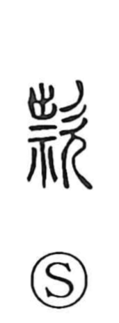

款

Uncategorized
Kun: | On: kan
clause ・ article ・ sincerity ・ promise ・ entreaty
Explanation
款 is a compound graph that sets the component 祟—here written in abbreviated form as 柰, depicting a spirit‑beast endowed with potent curse power—beside 欠, the profile of a person with mouth open in loud prayer. In the same word‑family, 殺 names the ritual beating used to weaken an enemy’s curse. Taken together, 款 portrays earnest supplication that calls on numinous power and appeals to the gods for a response. From this image of heartfelt prayer it came to signify sincerity and true intent, and by extension a pledged promise.